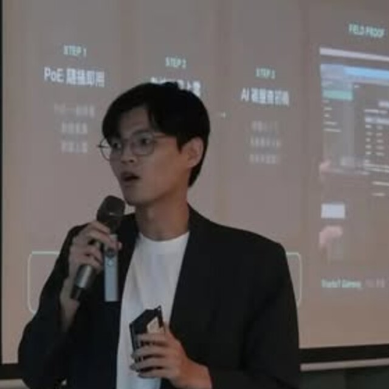

Ruisi Lu
M.S. in CS
I work on cloud infrastructure, edge systems, software architecture, and industrial AI. I am the founder and CEO of Laysi Co., Ltd.

About
I started in site reliability engineering and later worked across engineering leadership, technical strategy, and company building.
My current research sits between technology and management, asking how cloud-native infrastructure, edge security, and industrial AI change the way organizations govern systems, handle risk, and make operational decisions.
Research
- Zero-Trust Node Security for KubeEdge: A Policy-as-Service Architecture and Reliability Evaluation
- A Zero Trust Governance Framework for Digital Enterprise Management
- Multimodal Annotation for Industrial Machine Learning
Timeline
-
SRE
Started with reliability work: incidents, production systems, and learning how infrastructure breaks when people are under pressure.
-
Team leader
Took on team work, kept projects moving, and helped cloud-native engineers turn repeated problems into better habits.
-
CTO
Worked across edge infrastructure, security controls, and industrial software, with a closer look at which technical choices actually mattered.
-
CEO
Now building Laysi Co., Ltd. and staying close to the systems work: cloud-native infrastructure, edge security, and industrial AI.